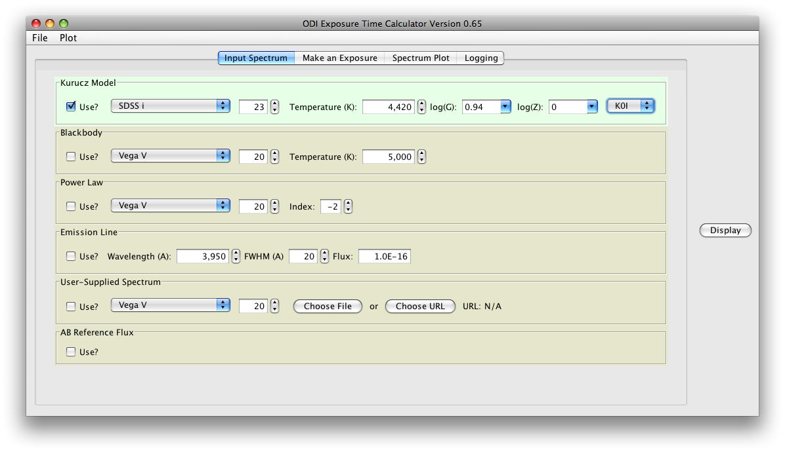
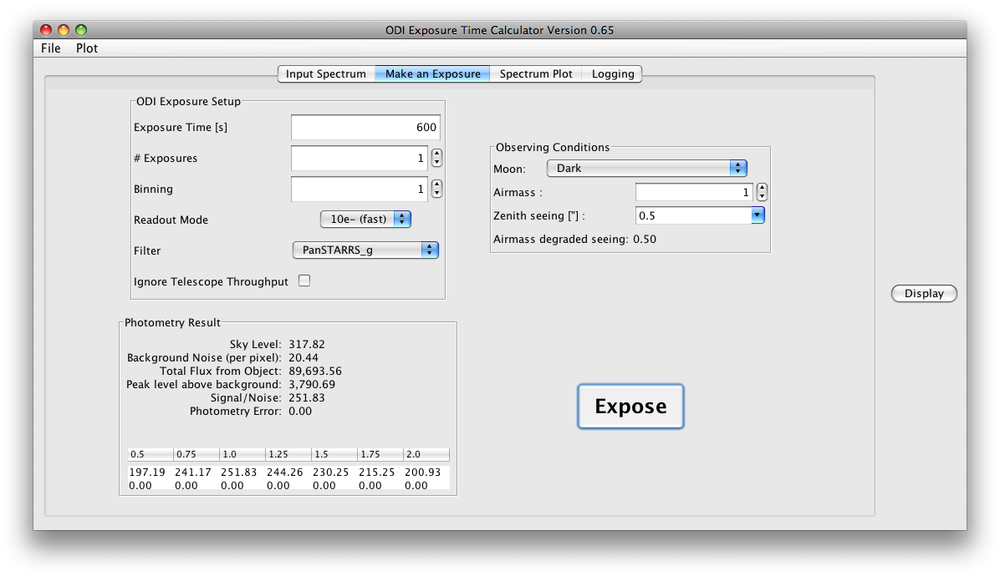
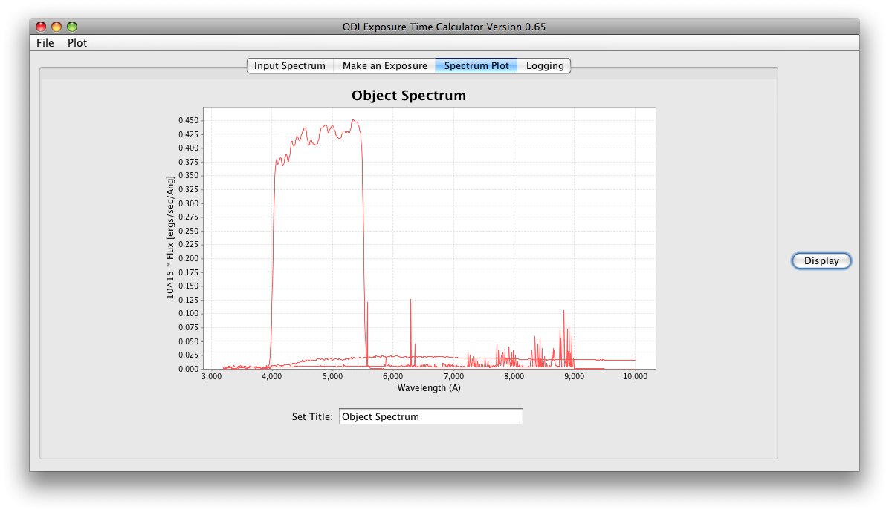
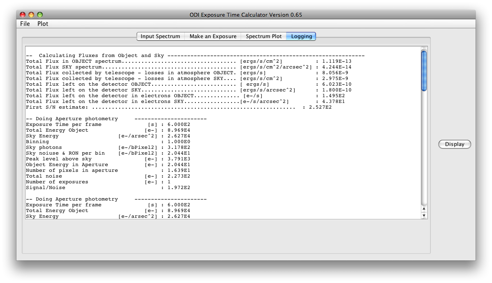

Click here to start the ODI Exposure Time Calculator
System Requirements
Java 1.5 (or newer) and Java Web Start are required to run the Exposure
Time Calculator (ETC). A relatively fast machine is helpful because a
complete model of the instrument will be calculated. Any system
supporting Java and Java Web start can be used to run this software.
Warning: This software is an alpha release and results
have not yet been verified.
Introduction
The ODI ETC is an end-to-end simulation of the ODI system. It contains
wavelength-dependent throughput models of all optical components of ODI
and the WIYN telescope, and the quantum efficiency prediction of the
detector. Based on flux-normalized input spectra, the ETC will calculate
the photon flux received by a detector and calculate a signal-to-noise
ratio for an exposure of a point source through aperture photometry. The
process is as follows:
- Select your input spectrum and flux normalisation.
- Set up an exposure and check the signal to noise.
- Iterate until satisfied with the result.
The ETC is divided into four major panels which are accessible through
tabs:
Spectrum Selection Tab
You can choose from a variety of input spectra in the ETC. Check the Use
button of a spectrum type and choose an appropriate normalization. Note
that the normalization in photometric systems is currently done at one
single wavelength; an absorption line falling onto the reference
wavelength could fool you! Note that if you select more than one
spectrum, all selected spectra will be added in the input. A
user-supplied spectrum can be specified, as long as it only contains two
columns of numbers (wavelength in Angstroem and flux in Fnu), and no
header or footer information!

Exposure Tab
This panel controls the exposure parameters. Enter the exposure time,
number of exposures, binning, and the readout mode. Standard readout
mode will be the fast 10 e- readout noise mode, but we plan to implement
a slow, low noise mode. However, its characteristics are pending. You
can enter the filter of your choice. For engineering purposes, we
included the SDSS system throughput curves for comparison with ODI. To
use them, you must click on "Ignore Telescope Throughput."
Press the Expose button to simulate the exposure. The results will
be displayed in the lower area of the pane. First, you will see
parameters such as sky level per pixel element (which can be two
physical pixels large in binning mode). Then the total number of
detected photons from the object is shown, and how much it peaks above
the background level.
Signal to Noise
In the table at the bottom of the pane, the signal-to-noise of the
exposures is displayed for a variety of apertures. Column headers show
the used aperture radius in units of the current seeing FWHM. Depending
on the luminosity of your object, the optimum aperture varies and is
smaller for faint sources since the background noise is dominating
earlier. The table first shows the signal to noise, and then the
expected photometric error, which relates to the SNR as error = 0.92 /
SNR. The text area is currently displaying the signal to noise of the
smallest aperture. At some point it will show the best SNR at the most
efficient aperture.

Graph Tab
The display panel shows the selected input spectrum and sky spectrum,
together with the ODI and telecope system throughput curve. Note: the
display is only updated when you press the Display button at the right.
When changing relevant input parameters (e.g., source spectrum, moon
phase, filer), please manually press the display button to update the
graph.
Automatic scaling is not yet supported; however, the graph can be
manually rescaled with your mouse: Left-click anywhere in the graph and
drag the mouse to the upper left, and release it. The graph will be
rescaled. You can zoom in by dragging the mouse from the upper left to
the lower right. Right-clicking opens a menu that allows you to save the
image.

Logging Tab
The logging tab shows additional information about the flux
normalization and photometry process. Here you can check the number of
each calculation step, or access intermediate results if you need them.

Limitations
- The software has not yet been verified with real on-sky
observations!
- The throughput and quantum efficiency tables are based on
predictions, not actual measurements!
- The exposure model can only handle point sources at this time.
Credit
- This software is based on the SALT Exposure time calculator,
which was started by Jeff Percival (UW Madison), and further developed
by Christian Hettlage (SAAO).
- Stellar input spectra use the
1993 Kurucz stellar atmospheres atlas .
-